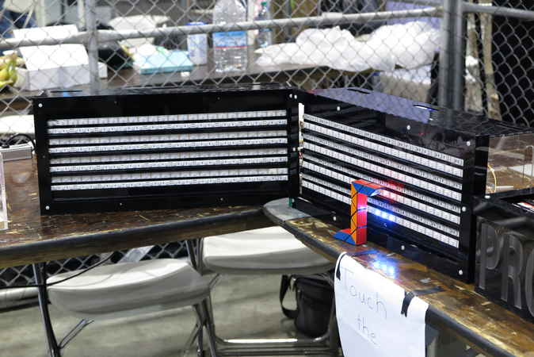
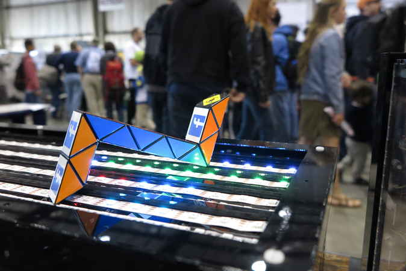
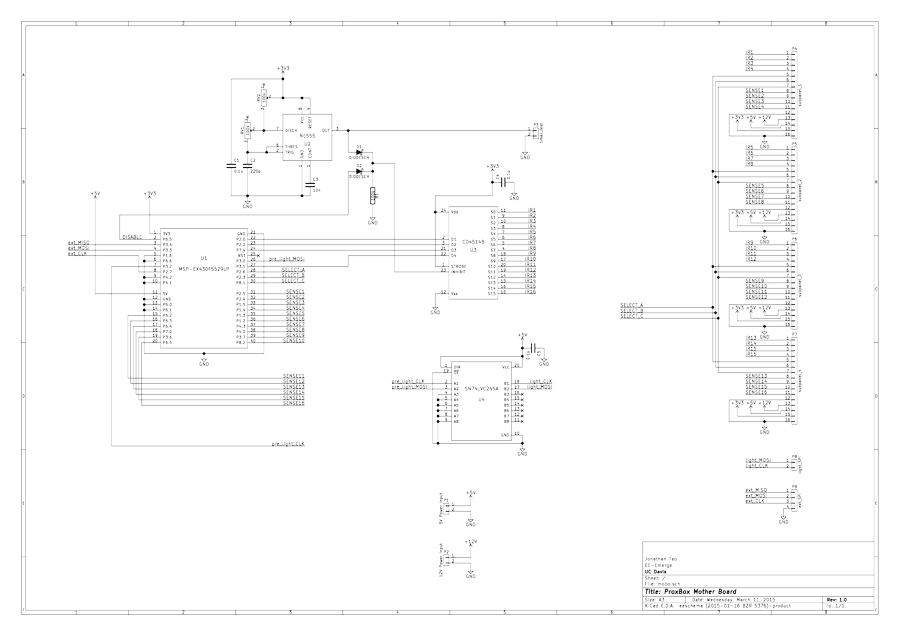

Proximity Box
The Proximity Box is an interactive box that detects a user's proximity! Last seen at the 2015 San Mateo Maker Fair!
The Frontend
The Proximity Box senses a user's proximity by detecting the intensity of infrared light reflected off the user. The modular boxes vary the color of the several hundred LEDs on their surfaces to indicate the proximity of a detected object. If you want to know about the innards, skim past the following picture gallery.
{kind=link}

Figure 1. The proximity box
{kind=link}

Figure 3. Anything works with the box

{kind=link}

The Backend
Here are the innards of the box. (Unfortunately, I only found pictures of my first revision. I may or may not update the page when I finally find the newest one)
Sensing
The basic principle of the Proximity Box is to selectively shine infrared light from the interactive surface to an nearby object and to detect the intensity of reflections from objects. Less intensity would mean that the object is further away, since intensity diminishes with distance.
One of the challenges of using infrared light is that ambient infrared from the environment may interfere with the sensing. I found a solution by using the Vishay TSSP4938 sensors, which have an optical filter to select only a particular wavelength of infrared and an integrated demodulator to pick out modulated infrared from the environment. Modulation can be done by simply blinking an IR LED (or IR LED strips in my case) at the correct modulation frequency.
Vishay's TSSP line is quite special in that they are able to express intensity. The more typical version of the sensor only detects whether or not the light has exceeded a threshold and outputs a digital high or low. The TSSP line, however, is able to express detected intensity as a pulse width. A weak detected signal would correspond to a narrow pulse, while a strong one would correspond to a wide pulse. An incredibly strong signal would give a constant output with an "infinite width" pulse. Note that the pulse encoding is not a continuous PWM signal, but a single impulse-like pulse beginning when any low intensity IR is detected. Essentially, the Proximity Box is covered in urinal sensors. More about Vishay's TSSP can be found in their application note/brochure.
Output
After the sensors detect proximity, corresponding colors were displayed on a very long chain of APA102 RGB LEDs (see my post on the LED). The APA102 RGB LEDs are daisy-chained LEDs with memory and a simple shift-register-like SPI interface. Although it may seem that there are four separate surfaces for the Proximity Box, the LEDs are are actually daisy chained across all four boxes. The output portion of the Proximity Box is simply several hundred APA102 LED modules on a single chain.
The Motherboard
{kind=link}
The motherboard houses the microcontroller, supporting circuity, and connectors. The microcontroller used was the MSP430 (MSP-EX430F5529LP), chosen for its availability at the time. Supporting circuity includes a 555 timer for modulating the infrared LEDs without controller intervention, a MUX for selecting the infrared LEDs, and a level shifter. The motherboard also includes 16 potentiometers to tune the intensity of the infrared LEDs in case a stronger or weaker signal is needed. The motherboard has no power circuity, because the Proximity Box is powered by a PSU taken from a computer. Just three wires from the mother board are needed to push data to the output LED strip. Undocumented code for the MSP430 controller can be found at this GitHub repository (coded with Code Composer).
{kind=link}

Figure 4. The motherboard schematicThe Panels
The motherboard is connected to four panel circuits which correspond to the four boxes. The panel circuits contain I2C I/O expanders that read in the pulses from the TSSP sensors. Since no hardware interrupts are available at this scale, the I/O expanders were simply sampled very quickly to obtain the pulse width. The panels also have four FETs that modulate the infrared LEDs.
{kind=link}
The Subpanels
The subpanels were not actual circuit boards, but a schematic exists for it. Each panel is connected to four subpanels, which corresponds to the four rows of sensors on each box. The subpanels were constructed with plenty of hot glue and ribbon cables.
{kind=link}